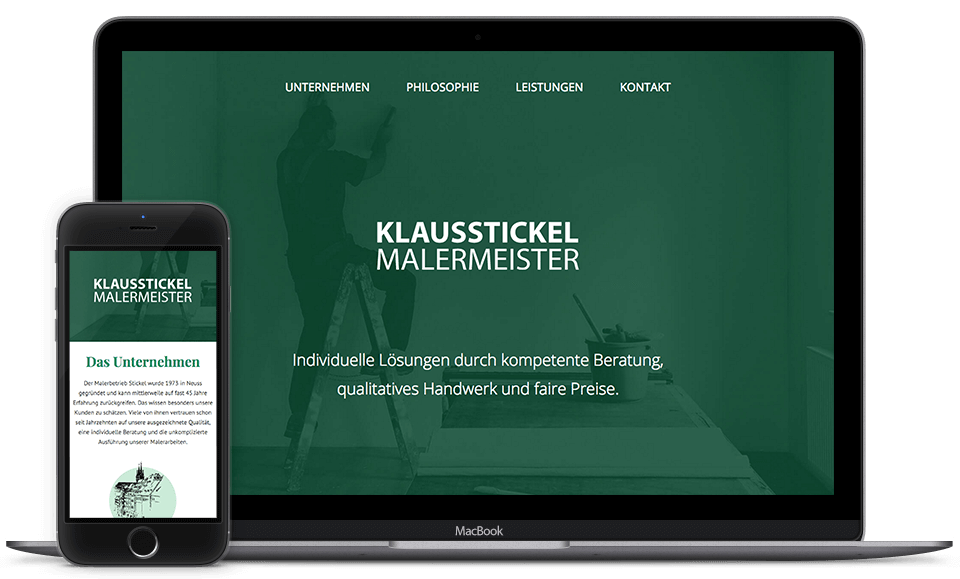

I worked together with Malerbetrieb Stickel, a small painting company from Germany, to completely redesign their logo, branding and website.
Malerbetrieb Stickel is a small painting company with great tradition from Neuss, Germany. The company's focus lies on high quality craftmanship paired with innovative room design. The main goal was to create a new brand identity which combines the traditional craftsmanship with a modern and fresh visual apperience.
After talking with the company about its core businesses we agreed that there is no need for a larger site. We settled on creating a longer landingpage where all the necessary information can be found easily. I used the awesome Project Gutenberg SVG images by @femmebot to give everything a more traditional look. Because the client doesn't need regular updates on his website, I did not even use a CMS. Just a good old static website. Therefore the site is loading really fast, especially because a simple SmoothScroll.js is the only JS used.
You can check out the final site over here.